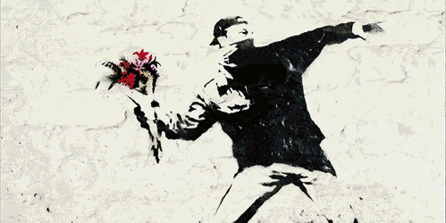

Follow him on Social Media
Banksy's name and identity remain unconfirmed and the subject of speculation. In a 2003 interview with Simon Hattenstone of The Guardian, Banksy is described as "white, 28, scruffy casual – jeans, T-shirt, a silver tooth, silver chain and silver earring. He looks like a cross between Jimmy Nail and Mike Skinner of the Streets". He began as an artist at the age of 14, was expelled from school, and served time in prison for petty crime. According to Hattenstone, "anonymity is vital to him because graffiti is illegal". For 10 years in the late 1990s, Banksy lived in Easton, Bristol, then moved to London around 2000.
Banksy is believed to be Robin Gunningham, born on 28 July 1973 in Yate, 12 miles (19 km) from Bristol. Several of Gunningham's associates and former schoolmates at Bristol Cathedral School have corroborated this rumour, and in 2016, a study found that the incidence of Banksy's works correlated with the known movements of Gunningham. Lawyers representing Banksy commented on this study, but did not suggest that the paper's conclusions were flawed.
In 1994, Banksy checked into a New York hotel using the name "Robin",and in June 2017, DJ Goldie referred to Banksy as "Rob". There has been alternate speculation that Banksy is: Robert Del Naja (a.k.a. 3D), frontman of the trip hop band Massive Attack. Del Naja had been a graffiti artist during the 1980s prior to forming the band and had previously been identified as a personal friend of Banksy. Jamie Hewlett, English comic book artist and designer best known for the comic Tank Girl and the virtual band Gorillaz. Joanna Brooks, Banksy's publicist, denied this claim. In October 2014, an internet hoax circulated that Banksy had been arrested and his identity revealed.
